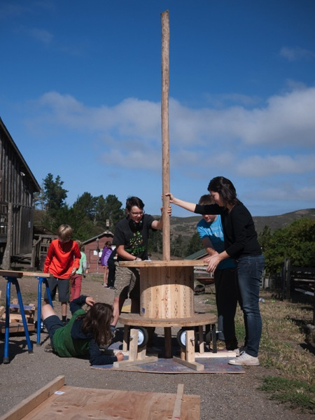

cassia fernandez
education
2011 | &bull bachelor in physics. physics institute - universidade de são paulo
2017 | masters in electrical engineering – electronics system department at escola politécnica da universidade de são Paulo (POLI-USP)
teaching experience
2016. sidarta institute. elementary and middle school teacher
2016. emef gen. alcides etchegoyen. middle school teacher
2015-2016. workshops for teachers of public and private schools
2015. teaching assistant for "intruction to electrical engineering" discipline at undergraduate level
2014. tinkering school. overnight camp colaborator
publications
Fernandez, C.O.; Martinazzo, A.A.G.; Biazon, L.C.; Ficheman, I.K.; Lopes, R.D. “Uma proposta baseada em projetos para oficinas de Internet das Coisas com Arduino voltadas a estudantes do Ensino Médio.: RENOTE, v. 14, n. 1, 2016.
Fernandez, C.O.; Biazon, L.C.; Martinazzo, A.A.G.; Ficheman, I.K.; Lopes, R.D. Um Modelo de oficinas de Internet das Coisas para estudantes do Ensino Médio in: Robótica e Computação Física na Educação Brasileira. Blikstein, P.; Silva, R.B. (eds). In Press.
FERNANDEZ, C.O.; LOPES,R.D.; GRIMONI, J.A.B.; ZANCUL, E.S. Ensino de projeto do produto: análise de abordagem multidisciplinar com foco em criatividade para inovação em contextos reais. Gestão E Tecnologia de Projetos. São Carlos. In Press.
fellowships
Stanford FabLearn Fellow
MIT-Brazil Lemann Seed Fund
technical skills
hardware. microcontroller programming; PCB design; electronics fabrication
projects

FEIRA DO CONHECIMENTO - COLÉGIO SIDARTA. 2016

tinkering school. 2014

tinkering school. 2014 
tinkering school. 2014